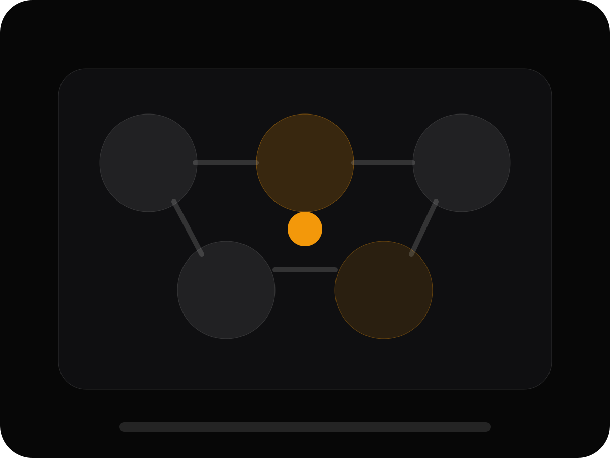

Audiencias reales
Pauta legítima para llegar a personas, no a bots.
Lleva más oyentes reales a tu canción, álbum o perfil de artista.

Publicar una canción no garantiza descubrimiento. Una campaña bien segmentada puede poner tu música frente a personas con afinidad real por tu género.
Pauta legítima para llegar a personas, no a bots.
Géneros, intereses, artistas similares y territorios estratégicos.
Medimos rendimiento y ajustamos la campaña con base en datos.
Comparte tu lanzamiento y te diremos qué plataforma, presupuesto y enfoque puede convenirte.
No vendemos streams, seguidores ni reproducciones garantizadas. Trabajamos con campañas publicitarias legítimas en plataformas oficiales, audiencias reales y resultados estimados.